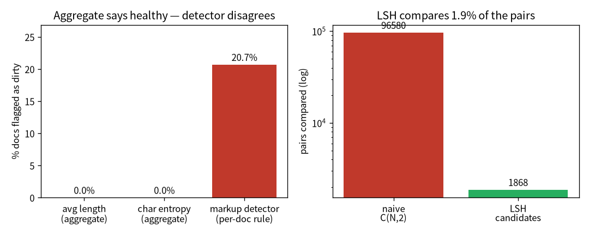

flowchart LR A["01 GPT"]-->B["02 零件"]-->C["03 效率"]-->D["04 資料"]-->E["05 評估"]-->F["06 服務"]-->G["07 治理"]-->H["08 漂移"] E -.後訓練.-> I["09 對齊"] classDef here fill:#c0392b,color:#fff,stroke:#7b241c,stroke-width:2px; class D here
4 真實資料的坑：從 1 MB 英文到 105 MB 中文
一句話：把玩具語料換成真實規模的中文維基後，原本 pipeline 的假設一個個破——而最危險的問題， 是聚合指標看不到、只有「真的去看資料」才現形的那種。
模型架構是一回事，餵它什麼是另一回事——而且後者往往更決定成敗。前面幾章我用的是 1 MB 的英文 莎士比亞，乾淨、小、好懂。這一章我換成 105 MB、11,000 多篇中文維基，看看真實規模的資料會怎麼 把我原本「想當然耳」的假設一個個打破。
注记這章的定位（讀之前先對齊期待）
假設你已經會：基本集合運算與機率直覺。不需要任何 NLP 資料工程背景。
學完你會：(1) 說出跨語言（英→中）會打破哪些「想當然耳」的假設；(2) 逐行理解 MinHash + LSH 怎麼把去重從 O(n^2) 降到接近 O(n)；(3) 在你自己的 CPU 上親手重現本章兩個最重要的瞬間—— 聚合指標說「健康」但一條偵測器抓出 20% 髒資料，以及 LSH 只細比 ~2% 的對就找到重複。 本章 💻 配套程式 tiny_dedup.py 純標準庫、不需 torch、幾秒跑完。
提示🎯 給技術主管：本章關鍵術語速查（懂的人可跳過）
不必親手實作也能跟上——每個術語一句白話 + 為什麼你該在意。
- tokenizer（char-level / BPE）：把文字切成 token 的方式。在意它：影響成本、序列長度、跨語言適用性。
- 去重（dedup）／ MinHash + LSH：移除近似重複文件的演算法。在意它：髒/重複資料直接拖垮品質；演算法決定可不可行（O(n^2)\to 近 O(n)）。
- 熵 / 熵效率：資料「亂度」的量化。在意它：跨語言別照搬英文門檻（中文熵天生高）。
- 資料品質偵測器 / gate：把「看資料的眼睛」寫成規則擋關。在意它：聚合指標會說謊，偵測器才抓得到藏起來的髒資料。
- 聚合指標的盲點：總分漂亮常只是問題被平均掉。在意它：別只信 dashboard 的總分。
4.1 英文假設一個個破
我的 pipeline 是照英文資料寫的。換成中文後，第一批壞掉的是這些：
| 原本（英文玩具） | 換成中文後壞在哪 | 修法 |
|---|---|---|
| 用空白切詞做 shingle 去重 | 中文沒空白 → 整篇變成「一個詞」→ 去重失效 | 改用字元 n-gram |
| 兩兩比對 O(n^2) | 11k 篇純 Python 跑「幾小時/卡死」 | 加 MinHash + LSH（見 小节 10.4） |
| 熵門檻是英文校準的（3.5–6） | 中文字元熵 9.70，被誤判成「不健康」 | 改用熵效率（熵 / \log_2 vocab，跨語言通用） |
每一條都是同一個教訓：跨語言別照搬假設。英文用空白分詞、熵的尺度、甚至「一個 token 多大」， 換到中文全都要重想。
4.2 MinHash + LSH：把去重從 O(n^2) 降到接近 O(n)
近似去重的天真做法是「每兩篇算一次相似度」——O(n^2)，11k 篇就是上億次比較，純 Python 跑不動。 MinHash + LSH 是經典的解法，背後有漂亮的機率論（完整推導見 小节 10.4），直覺是：
- MinHash：把每篇文件壓成一個短「簽章」，性質是——兩篇的簽章相等的機率，恰好等於它們的 Jaccard 相似度。於是「比簽章」就近似「比相似度」，但便宜得多。
- LSH banding：把簽章切成幾個 band，只有「至少共用一個 band」的文件對才拿出來細比。這讓你 跳過絕大多數不可能相似的對，候選對數量大降。
4.2.1 逐行把去重管線建起來
我們用 tiny_dedup.py 把這條管線一步步建出來——字元 n-gram → MinHash 簽章 → LSH 找候選 → 再算真實 Jaccard 確認。
第 0 步——shingle（字元 n-gram）。 中文沒空白，所以不切詞、改切字元 5-gram：把每篇變成 一個「片段集合」。兩篇的相似度就用集合的 Jaccard 來定義：
第 1 步——MinHash 簽章。 對每個 shingle 算一組雜湊，取最小值當一個簽章分量；換 64 組 雜湊就得到 64 維簽章。神奇性質：兩篇簽章某一維相等的機率，恰好等於它們的 Jaccard。 （雜湊用 crc32 而非 Python 內建 hash()——後者對字串會加鹽、跨 process 不可重現。）
第 2 步——LSH banding 找候選。 把 64 維簽章切成 16 個 band（每 band 4 維），同一 band 完全 相同的文件丟進同一個桶。只有同桶的文件對才是候選——這一步把 O(n^2) 砍成「只比可能相似的」：
第 3 步——對候選算真實 Jaccard 確認。 只對候選對算一次精確 Jaccard，超過門檻才判為重複。 LSH 負責「便宜地縮小範圍」，精確比對負責「最後確認」：
實測：改造後，11,126 篇中文維基 21.6 秒去完、抓出 161 篇近似重複。舊版（空白切詞 + 兩兩比） 會跑幾小時或直接卡死。這是個純粹的「省」——演算法複雜度的勝利。
4.3 聚合指標的盲點（本章的核心教訓）
去重做完、清洗做完，我算了一輪資料品質指標：字元熵、壓縮比、重複率——全部顯示「資料健康 ✅」。 照理說可以開始訓練了。但我有個從稽核帶來的本能：不信任「總分漂亮」。總分漂亮，常常只是因為 問題被平均掉了。
所以我做了一件事：把「看資料」這個動作工業化。
重要一定要「看資料」，並把眼睛固化成程式
我寫了一套資料品質偵測器：7 條規則（wiki 標記、HTML、控制字元、URL、符號洗版、重複、過短） 掃過全語料，量化每條的命中率、設門檻當資料 gate、並抽出問題片段樣本。
結果抓到 21.6%（2,407 篇） 文件殘留維基的繁簡轉換語法 -{zh-tw:..;zh-cn:..}-——這是任何聚合 指標都看不到的。熵、壓縮、重複率全說健康，因為這些髒東西只佔每篇的一小部分、被平均稀釋掉了。 只有「真的去看樣本 + 把問題寫成偵測器」才讓它現形。
修一條清洗規則（解析並抽取繁簡語法），21.6% → 0.05%，整批 gate 從 ❌ 變 ✅。我用監控面板的 before/after 對照圖留下視覺證據。
這套偵測器系統的心法，跟我疊稽核控制項是同一個思路：
看樣本發現問題 → 寫成一條偵測器 → 累積成資料的測試套件。
每抓到一種新的髒資料，就多一條偵測器；久了，這套偵測器就成了「資料的回歸測試」——下次語料更新， 跑一遍就知道有沒有舊問題復發、有沒有新問題冒出來。一條來源動到 5–15 條偵測器是常態。
4.4 💻 在你的機器上：聚合指標的盲點 + LSH 的速度
這兩課不必有 105 MB 中文維基也能親手摸到。配套程式 tiny_dedup.py（純標準庫、不需 torch、 幾秒跑完）拿莎士比亞切成「文件」，動手注入近似重複與一種藏起來的髒語法，再把兩課跑一遍：
在我的 Framework 16 上跑出來（節錄）：
語料：440 篇文件（含注入的 40 組近似重複、85 篇含髒語法）
=== 聚合指標（總分）===
平均文件長度： 238 字元
全語料字元熵： 4.72 bits/char
→ 看起來資料健康 ✅（長度正常、熵正常）
=== 一條偵測器（看樣本後寫成規則）===
命中 markup 髒語法：91/440 = 20.7% 文件 ← 聚合指標完全看不到
=== 去重：naive vs MinHash+LSH ===
naive：比較 96580 對（C(N,2)，O(n²)），抓到 41 組，3446 ms
LSH ：只細比 1868 個候選對，抓到 38 組，1135 ms
LSH 候選只佔 naive 的 1.9%怎麼讀——兩課各一個數字：
- 聚合指標的盲點：平均長度、字元熵都說「健康 ✅」，但一條 regex 偵測器抓出 20.7% 的文件 殘留 markup 髒語法。為什麼總分看不到？因為髒東西只佔每篇一小段、被平均稀釋掉了——這正是真實 專案裡 21.6% 繁簡語法那一課的最小可重現版。總分漂亮，常常只是問題被平均掉了。
- LSH 的速度：naive 要比 96,580 對（O(n^2)），LSH 只細比 1.9% 的候選對就找到幾乎同一批 重複。N 越大這個比例越懸殊——這就是 O(n^2)\to 接近 O(n) 的來源。（LSH 是近似法，會 漏掉幾組卡在門檻邊界的對，是用一點 recall 換速度；要更高 recall 就加 band。）
图 4.1 把這兩課畫在一起：

4.5 收成：真實中文 GPT
清洗修好後重新跑完整 pipeline：collect 11,126 篇 → 清洗 → 去重 161 篇 → tokenize（字元級、vocab 14,210，全是中文字）→ pack 成 train 31.4M token。訓一個 6 層 / 256 維的現代架構模型（RoPE + GQA + SwiGLU + RMSNorm + Flash），四個成功判準全達標（細節見 章节 5），生成出可讀的中文片段—— 真詞、語法、標點都對，整體不連貫是 8M 小模型的預期水準。
4.6 帶走什麼
- 跨語言別照搬假設：切詞、熵門檻、token 大小在中文都要重想。
- 近似去重靠 MinHash + LSH 從 O(n^2) 降到接近 O(n)——一個有漂亮機率論證的工程勝利。
- 聚合指標必要但不夠。 一定要看樣本，並把「看資料的眼睛」寫成偵測器、累積成資料的測試套件。 21.6% 的髒資料，聚合指標全說健康——這是整本書最重要的「相信資料、不相信總分」的一課。
4.7 練習
注记1（先預測）：把 LSH 的 band 數調多會怎樣？
tiny_dedup.py 用 16 個 band（每 band 4 維）。先寫下你的預測：把 BANDS 調大（每 band 更少維）， recall（抓到的真重複比例）和候選對數量會往哪個方向走？
提示參考答案
band 越多、每 band 維度越少 → 兩篇「至少共用一個 band」越容易 → recall 升高，但候選對也變多 （更多誤報要細比，變慢）。這是 LSH 的核心取捨：band 配置在「漏掉真重複」與「比太多假候選」之間調。 動手把 BANDS 改成 32 看 recall 和候選數一起怎麼動。
注记2（動手）：新增一條偵測器
照 tiny_dedup.py 裡那條 regex 的樣子，加一條偵測「殘留 HTML 標籤」或「URL 洗版」的規則， 注入對應的髒資料、量它的命中率。
提示參考答案
重點不在 regex 本身，而在養成那個循環：看樣本發現問題 → 寫成一條偵測器 → 累積成資料的回歸測試。 每多一條，下次語料更新就多一道自動關卡。這就是把「看資料的眼睛」工業化——一條來源動到 5–15 條 偵測器是常態。
警告3（弄壞）：用英文校準的熵門檻去判中文
本章提到中文字元熵約 9.70，被英文校準的門檻（3.5–6）誤判成「不健康」。在 tiny_dedup.py 裡把 char_entropy 換算成不同單位、或想像套用英文門檻，會發生什麼？
提示參考答案
直接套英文的絕對熵門檻，會把完全正常的中文語料判成異常——因為中文 vocab 大得多、單字元熵天生 就高。修法是改用熵效率（熵 / \log_2 vocab），把尺度正規化成跨語言通用。這呼應本章主線： 跨語言別照搬假設——切詞、熵門檻、token 大小換到中文全要重想。